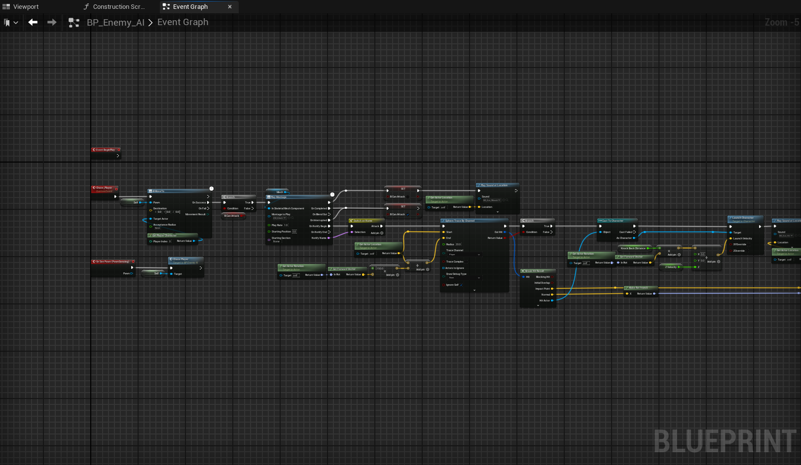
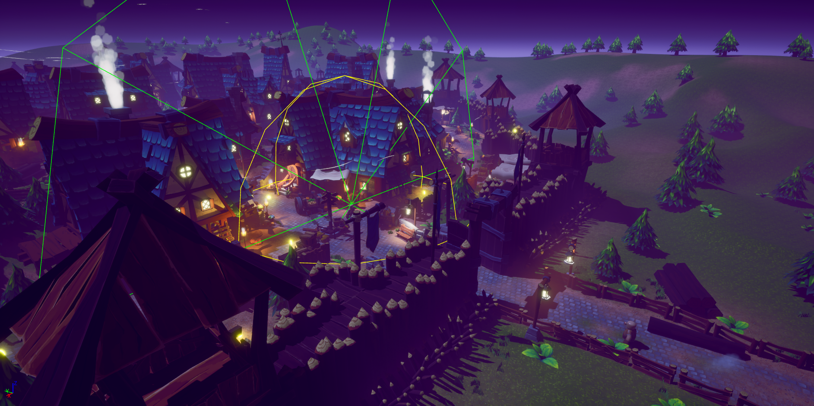
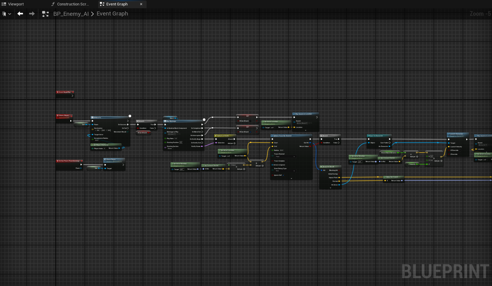
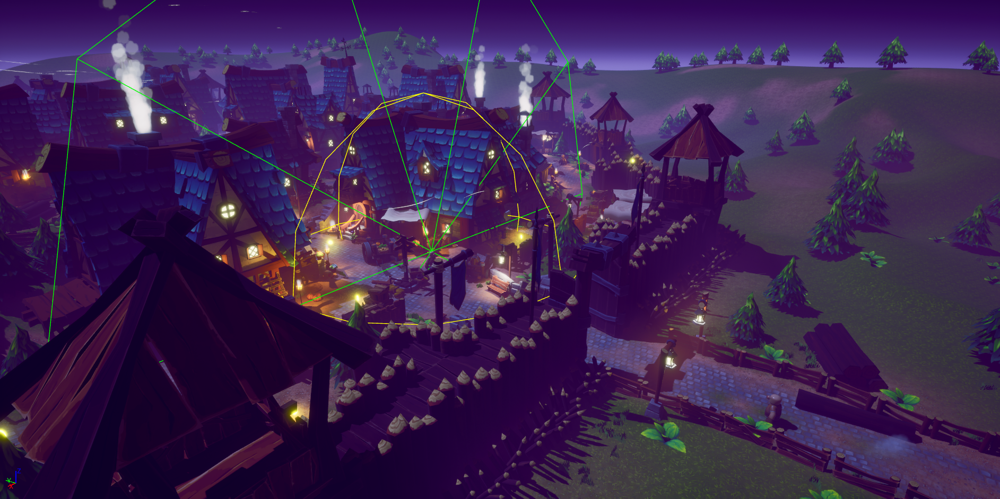

General
Elixir Blitz: Saya's Trials
Roles: Level Design, Environment Art, UI Design, 3D Modeling, Texturing
Tools: UE5, Blender, Fab, Photoshop, blueprints, landscape tools, foliage, tools, widgets


In this group project, I created the entire second level as shown in the Level Design section. I also created all the UI elements such as the inventory, main menu widget, settings, and the pause menu. I modeled and textured a set of ingredients that the player collects in the game.
Pac-Man Style Village Game
Roles: Enemy AI, Simple Combat, Player Mechanics, UI Design
Tools: UE5, blueprints, Fab, Mixamo

 




This is a simple game similar to Pac-Man, but in 3D. The player has to navigate a densely populated environment to collect coins scattered in the village. The villagers have a simple perception system and follow the player while in range. They have a single axe-swing animation that reduces player lives when connected. The game was made in Unreal Engine 5 using Blueprints for all mechanics and systems.
I created the combat, player boost, AI behavior, coin collection system, and UI elements. The environment is an asset pack from the Fab store.
Castle Environment
Tools: Landscape tools, foliage system, modular assets from Fab, splines
Resources: YouTube video and Assets by Unreal Sensei
Inspired by the YouTube video created by Unreal Sensei, I tried recreating a similar landscape with the same assets. This landscape is only for cinematic shots and cannot be used in video games due to its dense foliage.
The castle is made using modular pieces from the Unreal Marketplace, and the landscape is made using Unreal Engine 5's landscape tools and foliage system.